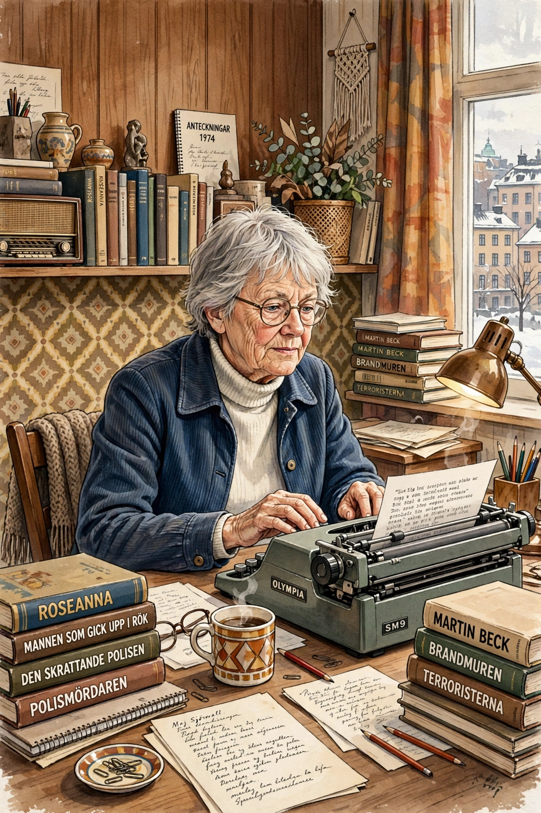

| Maj Sjöwall | |
| Born | 25 September 1935, Stockholm, Sweden |
|---|---|
| Died | 29 April 2020 (aged 84), Landskrona, Sweden |
| Occupation | Author, journalist, translator |
| Notable works | The Martin Beck series (with Per Wahlöö) |
| Spouse | Per Wahlöö (m. 1962; died 1975) |
Maj Sjöwall (25 September 1935 – 29 April 2020) was a Swedish author and translator. Together with her partner and husband Per Wahlöö (1926–1975), she co-wrote a series of ten detective novels about the police detective Martin Beck, collectively titled The Story of a Crime (Roman om ett brott). Published between 1965 and 1975, the books revolutionised Scandinavian crime fiction, combining police-procedural realism with a left-wing critique of the Swedish welfare state, and became foundational texts of what later became known worldwide as Nordic noir.

Sjöwall was born in Stockholm and worked as a journalist and art director for Swedish magazines. She met Wahlöö while both worked in publishing; they married in 1962. The pair planned their ten-novel cycle in advance, writing alternate chapters in the evenings after work. The series begins with Roseanna (1965) and ends with The Terrorists (1975), completed shortly before Wahlöö's death from pancreatic cancer.
After Wahlöö's death Sjöwall worked principally as a translator — she had, with Wahlöö, translated Ed McBain's 87th Precinct novels into Swedish — and later lived for long periods in Malmö and Landskrona. She also co-wrote the novel The Locked Room-era works among the Beck cycle itself, and in her later years collaborated on a novel with German writer Jürgen Alberts, and wrote the standalone thriller Kvinnan som liknade Greta Garbo ("The Woman Who Resembled Greta Garbo", 1990) with Tomas Ross.
The ten Beck novels are Roseanna, The Man Who Went Up in Smoke, The Man on the Balcony, The Laughing Policeman (which won an Edgar Award in 1971), The Fire Engine That Disappeared, Murder at the Savoy, The Abominable Man, The Locked Room, Cop Killer and The Terrorists. They have been translated into some forty languages and repeatedly adapted for film and television in Sweden and abroad.